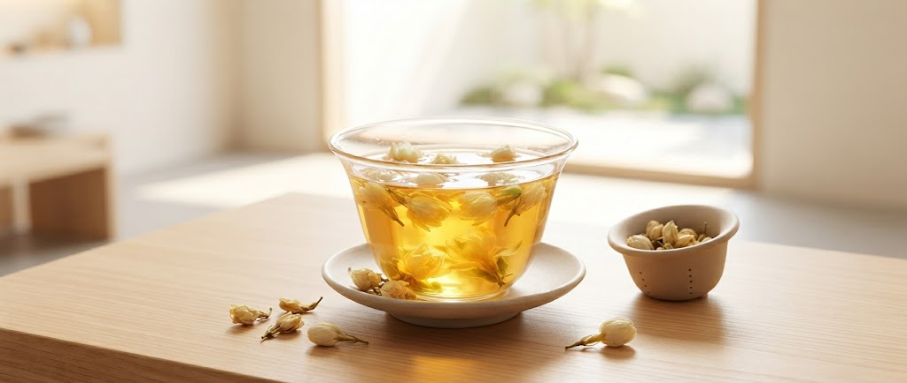
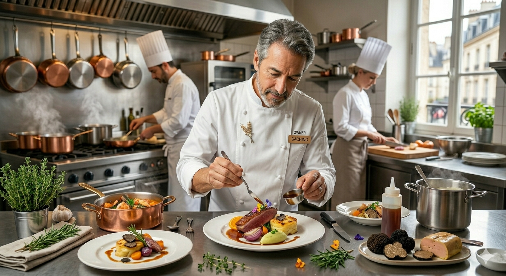

CHEF-1 GRAND PRIX 2022 CHAMPION
札幌・すすきののの片隅、十席のカウンター。
ひらまつグループで研鑽を積んだ大原正雄が、
北海道の旬をクラシカルな技法で昇華させる。
私たちの料理は、決して分かりやすいだけではありません。
素材の個性が時に鋭味にさえ感じられるほどの繊細さ。
それは、計算し尽くされたクラシックの技法が
北海道の力強い食材と衝突し、生まれる奥行きです。
一口ごとに「この美味しさの正解は何か」と自問する。
その知的な悦びこそが、食堂ろらんじゅの真骨頂です。
ひらまつグループ、そしてパリでの経験。王道のフランス料理をベースに、現代の感性を加えた唯一無二の構成。
元ワインバー支配人のソムリエが、料理のポテンシャルを最大限に引き出す一杯をご提案します。
目の前で仕上がる一皿。シェフの鼓動が伝わるカウンター席は、食というライブステージです。

コースの締めくくり。余韻を打ち消すのではなく、
料理の記憶を優しく、しかし鮮やかに結晶化させる一杯。
ソムリエとシェフが選び抜いた茶葉の香りは、
すすきののの夜を静かに閉じ込めます。
「インスタグラムを見た」とお伝えください。
食後のティータイムをアップグレードいたします。
「まずはろらんじゅの魅力を軽やかに愉しみたい」という声にお応えする特別セット企画を開始いたします。
北海道の旬素材をクラシカルなフランス料理の技法（コンソメ・ブイヨン）で炊き上げた「ろらんじゅ流・フレンチおでん」。
素材の深みに寄り添うワイン、または意外な化学反応を生む日本酒をソムリエが一杯選定。カウンターフレンチの入り口として、まずはお気軽にお試しいただけます。
★リピート特典：
本セットをご利用いただいたお客様には、次回フルコースご予約時に使える「ソムリエ厳選 食前酒/食後酒チケット」を進呈いたします。
※開始日・事前予約のご案内は公式Instagramにて優先発信いたします。

Owner Chef
1984年 北海道生まれ。幼少期より料理を志し、ひらまつグループにて東京、金沢、パリ、大阪、京都と各地の名店で腕を磨く。
2007年 ボキューズ・ドール国際料理コンクール日本代表アシスタント。2015年「ラ・フェット ひらまつ」料理長を経て、2018年 故郷・帯広にて独立。
2022年、CHEF-1グランプリ優勝。
461名の料理人の頂点に立ち、その技術を今、この10席に捧げる。
「この美味しさのポイントは何だ？」と、美味しさの正解を探るようにいただきました。いろんなフレンチを食べ慣れた人こそ、この《奥ゆかしい味》を楽しめると思います。
最初に、豪快なコロッケが出てきました。いきなり、めちゃくちゃ美味しい！パテドカンパーニュも最高でした。ワインの注ぎ方での味変体験も素晴らしかったです。
ご予約と店舗案内
〒064-0805 北海道帯広市中央区南5条西3丁目1-5
3ビル 2F（すすきのの口 徒歩3分）
旬の食材に合わせた新作料理や、ソムリエのおすすめワイン、週末の空席状況はInstagramにて随時更新しております。
※お席に限りがあるため、お早めのご予約をお勧めいたします。
© 2024 Syokudou L'orange